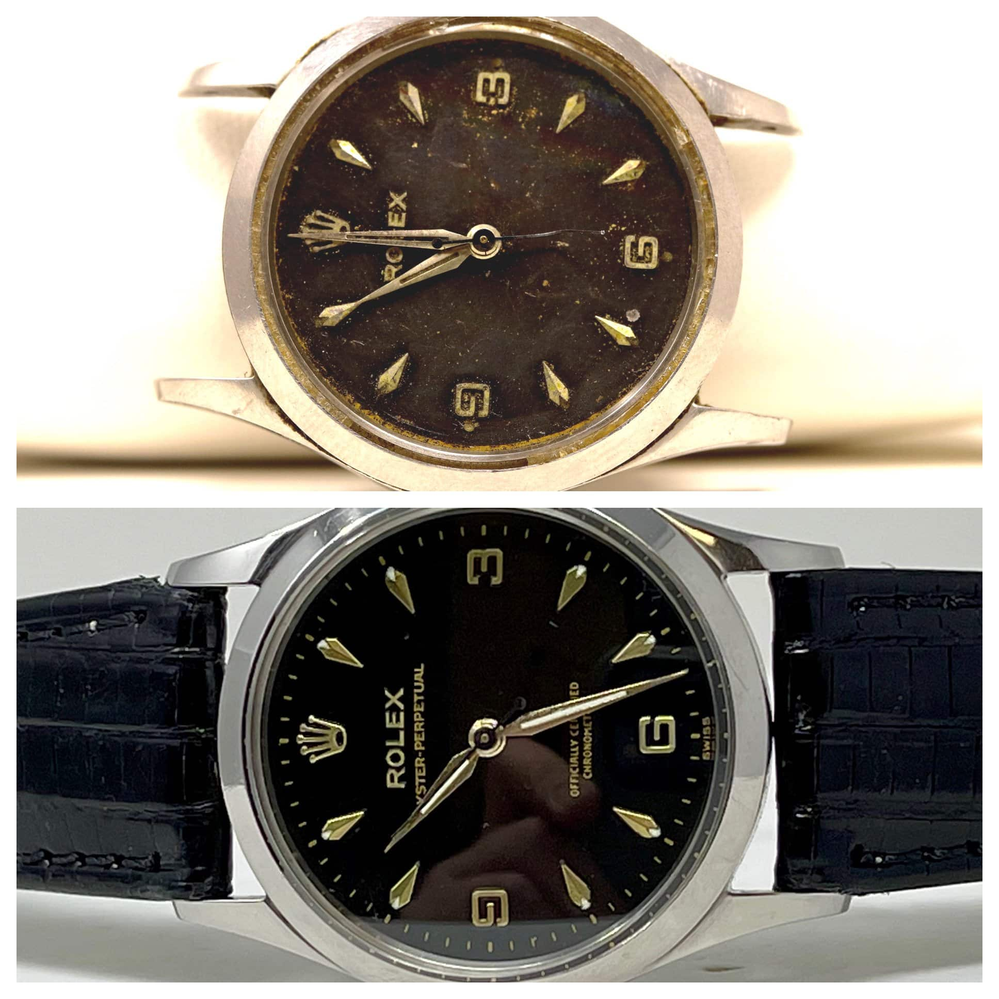
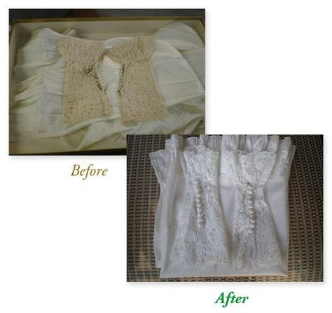

About Us
At Vintage Repairs, we have a deep appreciation for the timeless quality and charm of vintage items. Our skilled team of technicians is dedicated to bringing new life to your beloved possessions from the 60s, 70s, 80s, and 90s. With meticulous attention to detail and a passion for preserving the past, we take pride in our ability to restore these items to their original beauty.
Whether it's a vintage watch with intricate mechanisms or retro clothing with delicate stitching, our experts have the knowledge and expertise to handle a wide range of repairs. We combine traditional restoration techniques with modern tools to ensure the highest quality craftsmanship.


Our Values
- Preservation of history and craftsmanship
- Attention to detail and precision
- Quality workmanship and customer satisfaction
- Eco-friendly practices and sustainable repairs